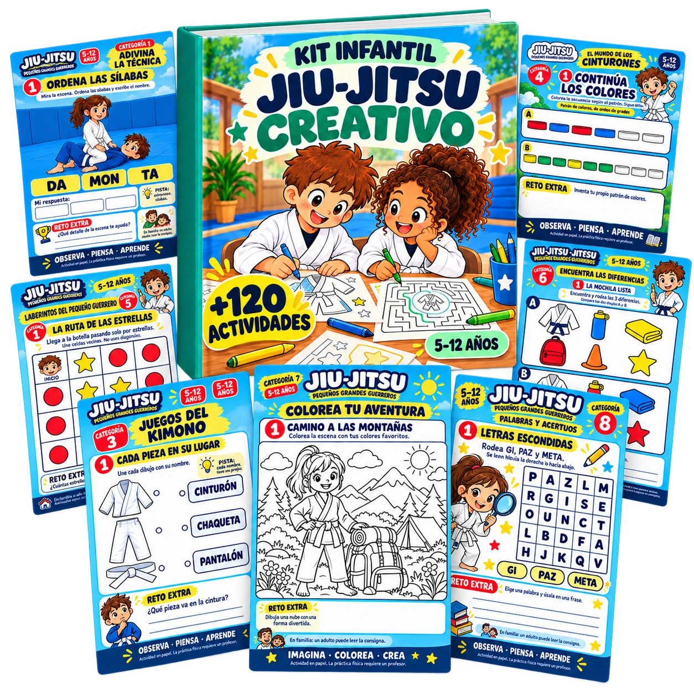
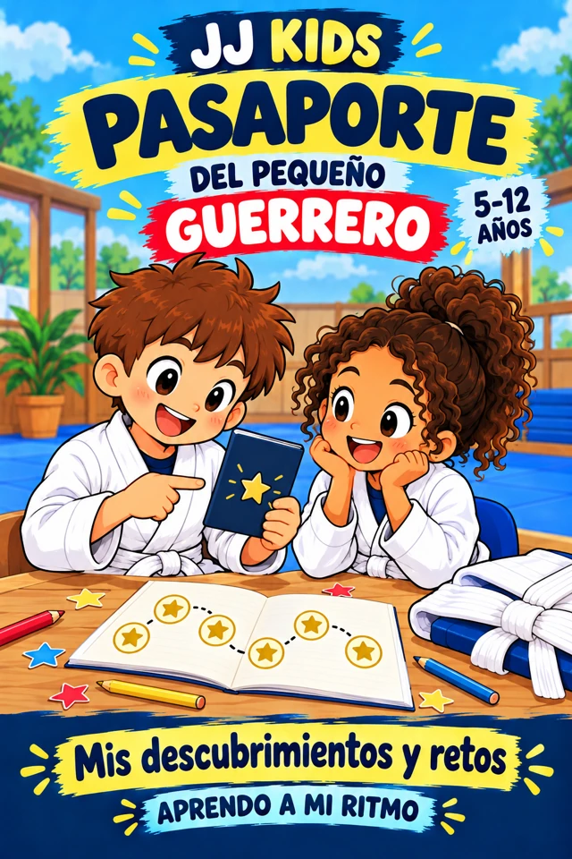
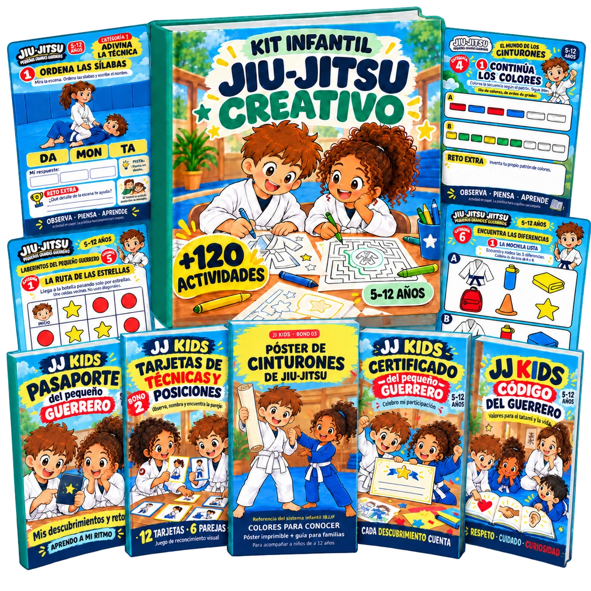

De “esa posición” a su nombre
Usa ilustraciones, pistas y juegos de asociación para retomar el vocabulario que presentas en tus clases.
Refuerza nombres, posiciones, gi, cinturones y valores con actividades listas para imprimir. Un apoyo creativo para profesores y academias con niños de 5 a 12 años.
Para practicar conocimientos en papel.
No son ejercicios físicos ni rutinas para el tatami.

Una hoja, una consigna y una conversación pueden abrir otra forma de aprender sobre Jiu-Jitsu.
Usa ilustraciones, pistas y juegos de asociación para retomar el vocabulario que presentas en tus clases.
Encuentra una actividad sobre el tema que quieres repasar, sin tener que diseñar cada hoja desde cero.
Abre un espacio para hablar de respeto, paciencia y cuidado de los compañeros con situaciones cercanas a los niños.
Alterna colorear, observar, unir y resolver. Elige la propuesta según la edad, la lectura y los intereses de tus alumnos.
Elige el tema, imprime la hoja y acompaña el repaso. Tú decides cómo integrarlo a tu propuesta educativa.
Retoma el nombre de una posición o las partes del gi con una hoja para observar y relacionar, sentados fuera del tatami.
PARA REPASAR VOCABULARIOPrepara un espacio con hojas y colores. Combina laberintos, diferencias y acertijos con la temática del Jiu-Jitsu.
PARA APRENDER JUGANDOUsa una ilustración o un reto como punto de partida: ¿cómo mostramos respeto?, ¿cómo cuidamos a un compañero?
PARA PENSAR Y CONVERSARConceptos de Jiu-Jitsu, vocabulario, valores y retos visuales. Todo se trabaja con hojas, lápices y colores.
Pistas e ilustraciones para relacionar una escena con el nombre de la técnica, sin ejecutarla.
Juegos visuales para reconocer posiciones y asociarlas con sus nombres en papel.
Actividades para identificar las partes del gi y relacionar dibujos con palabras.
Juegos sobre cinturones para conversar sobre el esfuerzo y el progreso con tus alumnos.
Recorridos en papel para observar, seguir caminos y resolver pequeños retos.
Escenas ilustradas para observar detalles y señalar lo que cambia entre ellas.
Dibujos del mundo del Jiu-Jitsu para colorear y dar espacio a la creatividad.
Nombres, letras y pistas para practicar el vocabulario que aparece en tus clases.
Situaciones para conversar sobre el respeto, la paciencia y el cuidado de los demás.
Retos en papel que combinan lo aprendido y permiten retomar distintos conceptos.
Explora muestras reales: reconocer posiciones, identificar el kimono, colorear, buscar diferencias y resolver acertijos.

Apoyos visuales y materiales para registrar actividades, conversar sobre valores y reconocer la participación.

Un espacio para que los niños registren descubrimientos y retos completados durante las actividades.

Un apoyo visual para proponer juegos de reconocimiento y relacionar imágenes con el vocabulario de tus clases.

Una referencia visual para conversar sobre cinturones. La progresión sigue los criterios de tu academia.

Un detalle para reconocer las actividades completadas. Es un certificado de participación, sin acreditación de grado o cinturón.

Historias y retos para abrir conversaciones sobre respeto, humildad, concentración y cuidado de los compañeros.
Más de 120 actividades y cinco bonos para complementar tu trabajo con niños de 5 a 12 años.

Recursos imprimibles para profesores: colorear, relacionar, resolver y repasar conocimientos de Jiu-Jitsu.
Actividades + 5 bonos
Para niños de 5 a 12 años
US$9.99
Actividades + 5 bonos incluidos
Material de mesa para practicar conocimientos.
No incluye ejercicios físicos ni rutinas para el tatami.
Continúa al checkout de Hotmart para realizar tu compra.
Conoces a tus alumnos y sabes qué necesitan retomar. El Kit Infantil de Jiu-Jitsu Creativo te ofrece una colección de actividades ilustradas para trabajar vocabulario, conceptos y valores de una manera cercana a los niños.
Elige las hojas según su edad y nivel de lectura, explica la consigna y conversa sobre sus respuestas. El propósito es practicar lo aprendido en papel; la enseñanza y la ejecución física de las técnicas siguen a cargo de un instructor calificado.
No. Son actividades de mesa para practicar conocimientos en papel: colorear, unir, reconocer imágenes, completar palabras y resolver retos. No son rutinas de entrenamiento, drills ni instrucciones para ejecutar técnicas.
Puedes usar el material como apoyo para repasar vocabulario, nombres de posiciones, partes del gi, cinturones y valores. Elige la hoja que se relacione con el tema que estás trabajando y acompaña la actividad.
Para niños de 5 a 12 años. Selecciona las actividades según su nivel de lectura, atención e intereses. Los más pequeños pueden necesitar que leas la consigna y los acompañes.
El material permite descubrir y repasar conceptos. Si aparecen nombres nuevos, puedes explicar su significado y ayudar a los niños a relacionarlos con las ilustraciones.
No. El kit es un recurso educativo complementario de actividades imprimibles. Tú eliges cómo integrarlo a tu enseñanza; no reemplaza tu planificación técnica ni la instrucción presencial.
Más de 120 actividades, organizadas en 10 categorías, y los cinco bonos presentados en esta página. El paquete completo cuesta US$9.99.
No. El póster es un recurso visual y el certificado reconoce la participación en las actividades. Los grados y cinturones dependen del sistema y los criterios de tu academia.
Es material digital en PDF para descargar e imprimir. Las imágenes muestran la presentación del contenido; no se envían libros impresos, hojas, lápices ni otros objetos físicos.
Una vez descargados los PDF, puedes imprimir las hojas que necesites para la actividad. Prepara lápices o colores y un espacio de mesa. Las hojas impresas se usan sin internet.
El botón de compra te lleva al checkout de Hotmart. Allí puedes revisar las condiciones, las formas de pago disponibles y completar la compra del kit.
Prepara una actividad para tus alumnos con nombres, posiciones, gi, cinturones y valores. El aprendizaje también tiene su espacio en la mesa.
Actividades educativas de mesa. No son ejercicios físicos para el tatami.